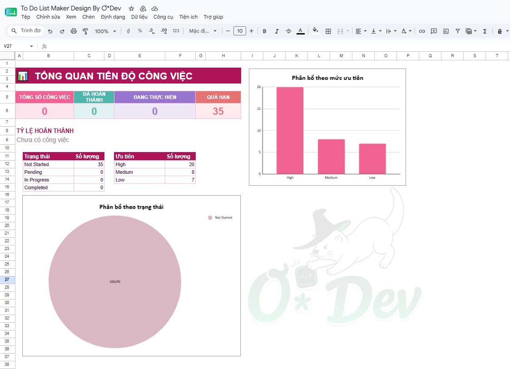
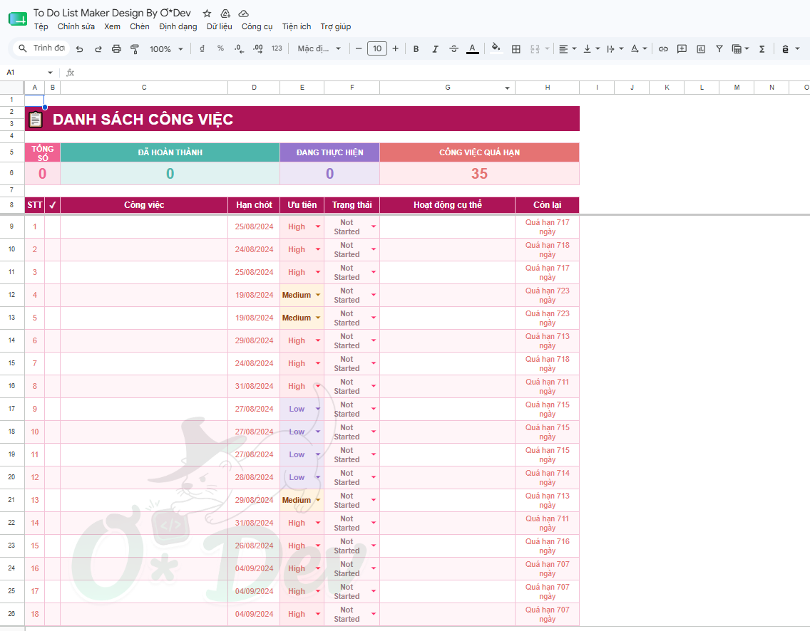
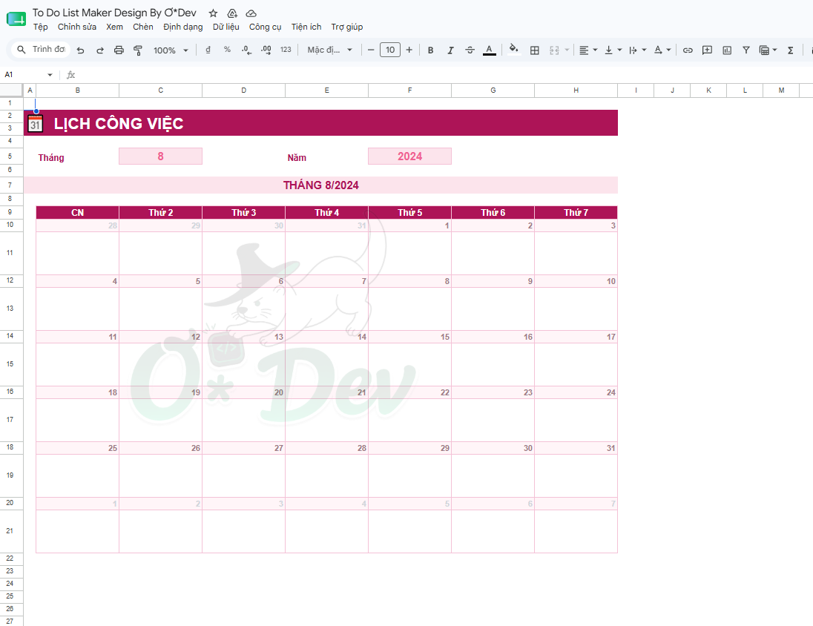
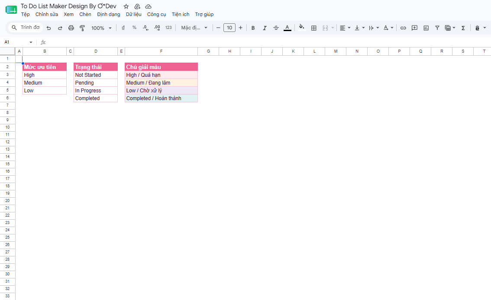
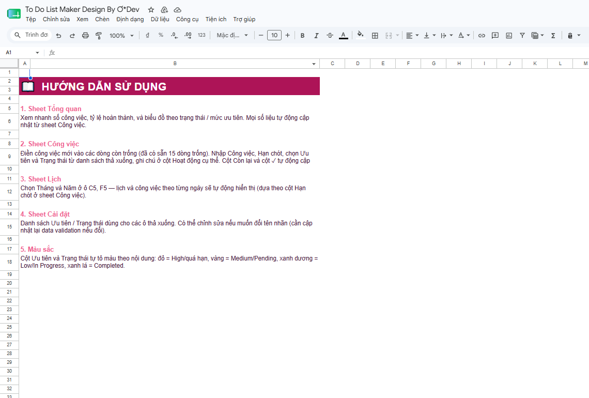

Theo Yêu Cầu Của Bạn Bè: Tối Ưu Công Việc Bằng To Do List Maker
Cách mình dựng một file Google Sheets to-do list tự động hoá từ dashboard, tô màu, lịch theo tháng đến hướng dẫn sử dụng — chỉ từ một lời nhờ giúp của bạn bè.
Cách đây ít lâu, một người bạn thân nhắn tin than thở: “Việc nhiều quá, list ghi ra giấy rồi cũng quên, còn ghi trên Excel thì rối tung, không biết cái nào gấp cái nào không”. Câu chuyện nghe quen không? Chắc hẳn 10 người thì hết 9 người từng rơi vào cảnh này — task nằm rải rác trong sổ tay, ứng dụng ghi chú, tin nhắn Zalo, thậm chí là... trí nhớ.
Thay vì chỉ đưa ra vài lời khuyên chung chung, mình quyết định ngồi xuống dựng hẳn một file To Do List Maker cho bạn dùng thử. Kết quả vượt ngoài mong đợi — không chỉ bạn mình dùng, mà cả team cũng "xin" lại file để áp dụng. Vậy nên hôm nay, Ơ*Dev viết bài này để chia sẻ lại công cụ đó cho bất kỳ ai đang cần một cách quản lý công việc gọn gàng, trực quan mà không tốn phí.
Vì sao một file Excel/Sheet "bình thường" lại không đủ?
Nếu bạn từng tự tạo một bảng theo dõi công việc, hẳn sẽ quen với những vấn đề sau:
- ·Danh sách công việc dài dằng dặc nhưng không biết tổng quan mình đang ở đâu — bao nhiêu việc đã xong, bao nhiêu đang trễ hạn.
- ·Muốn biết hôm nay/tuần này có việc gì đến hạn thì phải lọc thủ công hoặc dò từng dòng.
- ·Ưu tiên, trạng thái ghi tự do bằng chữ, không có màu sắc phân biệt, nhìn vào rất mỏi mắt.
- ·Thêm việc mới là phải tự tay định dạng lại ô, dễ sai công thức có sẵn.
To Do List Maker sinh ra để giải quyết đúng những điểm đau này — mọi thứ tự động hoá bằng công thức, người dùng chỉ việc nhập liệu và theo dõi.
1. Sheet Tổng quan — nhìn một lần là hiểu hết tiến độ
Ngay khi mở file, việc đầu tiên đập vào mắt là dashboard tổng quan: tổng số công việc, số đã hoàn thành, số đang thực hiện và số đã quá hạn — tất cả đều là số tự tính, không cần đếm tay. Bên dưới là hai biểu đồ trực quan: biểu đồ tròn thể hiện tỷ lệ theo trạng thái, biểu đồ cột thể hiện phân bổ theo mức ưu tiên.

Chỉ cần liếc qua là biết ngay hôm nay công việc đang "khoẻ" hay "báo động đỏ", không cần mở từng dòng để đếm.
2. Sheet Công việc — nơi mọi thứ được ghi lại và tự vận hành
Đây là "trái tim" của cả file. Mỗi công việc có đầy đủ: tên việc, hạn chót, mức ưu tiên, trạng thái, ghi chú hoạt động cụ thể, và cột "Còn lại" tự động báo còn bao nhiêu ngày hoặc đã quá hạn bao lâu.

Điểm mình thích nhất là màu sắc tự động đổi theo lựa chọn: chọn "High" ở cột Ưu tiên, cả ô tự chuyển màu đỏ pastel nổi bật; chọn "Completed" ở Trạng thái, dòng đó lập tức chuyển xanh nhẹ nhàng. Không cần tự tô màu, không sợ quên cập nhật.
3. Sheet Lịch — xem công việc theo đúng ngày, tự động 100%
Thích nhất là sheet Lịch. Bạn chỉ cần chọn Tháng và Năm ở góc trên, cả bảng lịch cùng danh sách công việc theo từng ngày sẽ tự sắp xếp lại theo đúng hạn chót đã nhập ở sheet Công việc — không cần copy-paste hay gõ lại bất cứ điều gì.

Muốn xem tháng sau có bao nhiêu việc dồn vào cuối tháng? Chỉ cần đổi một con số ở ô "Tháng", xong.
4. Sheet Cài đặt — tuỳ biến theo cách làm việc của riêng bạn
Không phải ai cũng dùng chung một hệ thống mức ưu tiên hay trạng thái. Sheet Cài đặt cho phép bạn xem và chỉnh sửa danh sách "High / Medium / Low", "Not Started / Pending / In Progress / Completed" — cùng bảng chú giải màu để không bao giờ nhầm lẫn ý nghĩa từng màu.

5. Sheet Hướng dẫn — không cần ai cầm tay chỉ việc
Vì làm ra để tặng bạn bè dùng, nên mình viết hẳn một trang hướng dẫn ngắn gọn, dễ hiểu, để ai mở file lên cũng tự biết cách dùng ngay từ lần đầu, không cần hỏi lại.

Kết quả sau khi bạn mình dùng thử
"Giờ mở máy lên là biết ngay hôm nay phải làm gì trước, việc nào đang trễ, không còn cảm giác ngợp như trước nữa."
Chỉ sau một tuần, bạn mình nhắn lại câu trên. Đó cũng chính là mục tiêu ban đầu khi mình bắt tay vào làm — không cần công cụ quản lý dự án phức tạp, đắt tiền, chỉ cần một file Sheet quen thuộc nhưng được tối ưu đúng chỗ.
Nếu công việc của bạn cũng đang rối như tơ vò, đừng ngại nhắn cho Ơ*Dev. Dù là một file to-do list cá nhân, hay một hệ thống quản lý công việc phức tạp hơn cho cả team, mình luôn sẵn sàng ngồi lại lắng nghe và dựng ra giải pháp phù hợp nhất — đúng như cách file này đã ra đời, chỉ từ một lời nhờ vả của bạn bè.
Toàn bộ hình ảnh trong bài là ảnh chụp thật từ file Google Sheets To Do List Maker đã gửi cho bạn — không phải ảnh dựng minh hoạ.